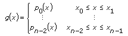
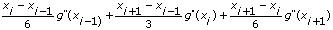
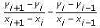
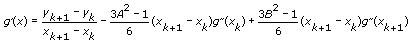
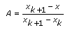
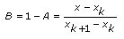
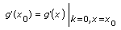
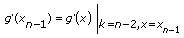

Returns an array Interpolant of length n, which contains the second derivatives of the spline interpolating function g(x) at the tabulated points x[i], where i = 0, 1, …, n–1.
Y is the array of dependent values. If the number of elements in the X is different from the number of elements in the Y, the VI sets the output Interpolant to an empty array and returns an error.
X is the array of independent values. If the number of elements in the X is different from the number of elements in the Y, the VI sets the output Interpolant to an empty array and returns an error.
initial boundary is the first derivative of interpolating function g(x) at x[0], g'(x[0]). The default is 1.00E+30, which causes this VI to set the initial boundary condition for a natural spline. Refer to Spline Interpolant Details for a definition of g(x).
final boundary is the first derivative of interpolating function g(x) at x[n – 1], g'(x[n – 1]). The default is 1.00E+30, which causes this VI to set the final boundary condition for a natural spline.
Interpolant is the second derivative of interpolating function g(x) at points x[i], i = 0, 1, …, n – 1. You can use Interpolant as an input to the Spline Interpolation VI to interpolate y at any value of
x0 x xn – 1.
error returns any error or warning from the VI. You can wire error to the Error Cluster From Error Code VI to convert the error code or warning into an error cluster.
Input arrays X and Y are of length n and contain a tabulated function where x0 < x1 < � < xn - 1, as shown in the following equation:
f(xi) = yi
The interpolating function g(x) is a piecewise function in the following equation:

The function pi(x) is a third-order polynomial that must satisfy the following conditions:
g(xi) = yi = pi(xi)
g(xi) = yi = pi – 1(xi)
The first and second derivatives, where i = 1, …, n – 2, at each interior xi is continuous:
g'(xi) = p'i(xi) = p'i - 1(xi)
g"(xi) = p"i(xi) = p"i – 1(xi)
With the third condition, you can derive the following equation:
 =

where i = 1, …, n – 2. According to this equation, n – 2 linear equations exist for n unknown g"(xi).
The Spline Interpolant VI computes two equations for the derivatives at x0 and xn – 1 in the following equation:

Consider the following equations:


The initial boundary is the equation

and the final boundary is the equation
.
For these equations, initial boundary and final boundary are the first derivative of g(x) at points x0 and xn – 1, respectively. If initial boundary and final boundary are equal to or greater than 1030, this VI sets the corresponding boundary condition for a natural spline, with no second derivatives on the boundary.
This VI solves g"(xi) from n equations when i = 0, 1, …, n – 1. g"(xi) is the Interpolant output.
 Add to the block diagram
Add to the block diagram Find on the palette
Find on the palette


 x
x